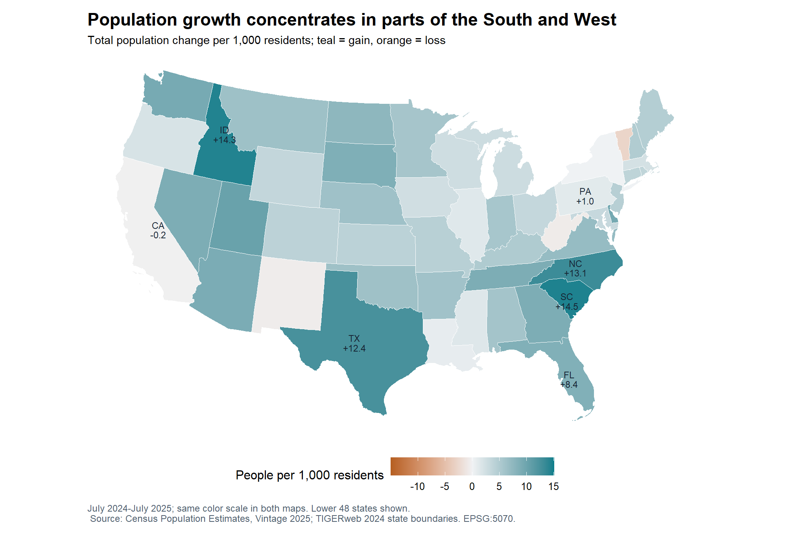
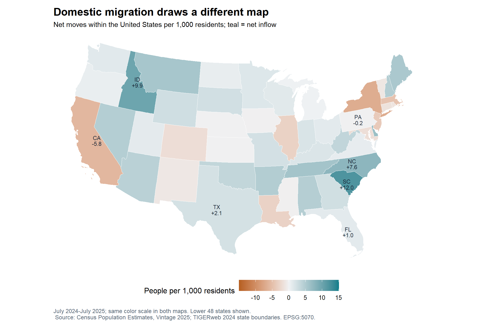
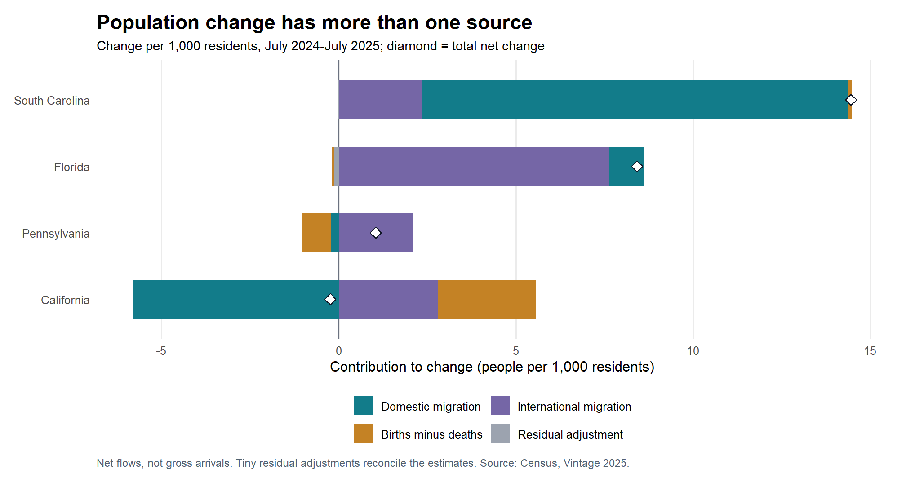

Florida and South Carolina: Two Different Growth Stories
GIS
R
population
economic geography
Two Census maps show why population growth and domestic migration tell different stories—and why the distinction matters for local planning.
Florida added 196,680 residents between July 2024 and July 2025. South Carolina added 79,958. Which population flows account for those gains, and how do their contributions differ across states?
The Census estimates give different answers. South Carolina’s growth was mainly a domestic-migration story; Florida’s largest contribution came from net international migration. Mapping the two measures separately shows why “a growing state” is too broad a label for understanding demographic change.
This matters for economic planning. More residents can mean more demand for homes, transportation, and services. But total growth alone cannot tell a community which demographic flows it needs to understand.
First, put growth on a comparable scale
I join the Census Bureau’s Vintage 2025 population estimates to official state polygons using two-digit state FIPS identifiers. The analysis covers all 50 states. Maps show the contiguous 48; Alaska and Hawaii remain in the downloadable comparison. Washington, D.C., and Puerto Rico are excluded from this state comparison.
Raw counts favor large states. Instead, each map expresses change per 1,000 residents, using the average of the July 2024 and July 2025 populations. A value of 10 means a gain equivalent to 10 people for every 1,000 residents. Both maps use identical colors and limits, so their shades are directly comparable.
South Carolina leads at 14.5 additional residents per 1,000, with Idaho close behind at 14.3. Florida gains 8.4. Parts of the South and Mountain West stand out, but a color indicating growth does not identify its source.
Now map domestic migration
Domestic migration is arrivals from elsewhere in the United States minus departures to other U.S. locations. It is a net balance, not the number of people who moved in. A state can have many arrivals and departures at the same time.

South Carolina remains dark teal: its domestic gain is 12.0 per 1,000 residents. Florida becomes much lighter, at only 1.0. Similar growth colors on the first map can therefore conceal quite different migration balances.
The distinction also matters outside the South. 15 of the 50 states grew despite net domestic outflows. Pennsylvania, for example, gained 1.0 residents per 1,000 overall while losing 0.2 through domestic migration. Calling it simply a state people are “leaving” would miss the rest of its population balance.
What fills the gap?
Population change combines net domestic migration, net international migration, births minus deaths, and a small Census reconciliation adjustment. These components classify flows; they are not mutually exclusive groups of people. “International” is a geographic category, not a citizenship or visa category; it also includes returning U.S.-born residents and other movements covered by the Census definition.

Florida’s net international gain was 178,674, compared with a domestic gain of 22,517. In Pennsylvania, international migration more than offset both domestic outflows and deaths exceeding births. California shows the reverse outcome: births exceeding deaths and international migration nearly offset its domestic loss, but its estimated population still edged down.
These are one-year accounting contributions, not proof of why people chose a destination. The figures do not establish effects of taxes, housing costs, jobs, or state policies. Nor do they reveal migrants’ ages, occupations, or service needs. State averages also conceal differences between cities and rural areas. The estimates may be revised; a small one-year change does not establish a lasting trend.
The takeaway: locate where population grew or declined, then examine the components before explaining the pattern. Domestic migration was central to South Carolina’s gain, while international migration contributed most to Florida’s. These balances provide a starting point for local planning; identifying particular housing or service needs requires additional local and demographic data.
NoteData, GIS methods, and replication
Population: NST-EST2025-ALLDATA, released January 2026; variable definitions and methodology. The analysis isolates July 2024-July 2025 using one consistent vintage, not a mixture of releases. These are published population estimates, not an unweighted microdata sample.
Geography: Census TIGERweb Generalized ACS 2024 State/County service, States 20M layer. The public service supplies generalized polygon coordinates transformed to EPSG:5070, NAD83 / Conus Albers, an equal-area projection for the contiguous United States. R draws those cached projected coordinates with ggplot2; no local GIS system libraries are required. The 2024 outline vintage is separate from the 2025 population-estimate vintage.
All inputs were downloaded October 17, 2026. Exact URLs and hashes are in data/raw/manifest.csv. The code verifies 50 unique state matches, agreement of state names, 48 mapped states, valid coordinates, and exact reconciliation of the population components. Polygon vertex order and separate rings are preserved; joins use FIPS codes rather than names.
Raw files are included, so rendering does not contact either data service. R/download_data.R reproduces acquisition to a separate folder if needed. Numeric statements, figures, join checks, tables, and comparison files are generated by R. The Post 5 README gives replication and publishing instructions.
NoteExact component values
| State | Total | Domestic migration | International migration | Births minus deaths | Residual | |
|---|---|---|---|---|---|---|
| 40 | South Carolina | +14.46 | +12.05 | +2.34 | +0.10 | -0.03 |
| 9 | Florida | +8.42 | +0.96 | +7.65 | -0.06 | -0.14 |
| 38 | Pennsylvania | +1.04 | -0.22 | +2.06 | -0.82 | +0.02 |
| 5 | California | -0.24 | -5.82 | +2.78 | +2.79 | +0.02 |
NoteView the R preparation and GIS code
# Read the included official Census files. Never download during rendering.
prepare_data <- function() {
manifest <- read.csv("data/raw/manifest.csv", stringsAsFactors = FALSE)
files <- file.path("data/raw", manifest$file)
if (!all(file.exists(files))) stop("Keep the complete data/raw folder with the post.")
if (!all(unname(tools::md5sum(files)) == manifest$md5)) {
stop("An input file changed. Review its provenance before using it.")
}
pop <- read.csv("data/raw/population_2025.csv", stringsAsFactors = FALSE)
# 040 = state-level records. Analyze 50 states; exclude DC and Puerto Rico.
pop <- pop[pop$SUMLEV == 40 & !pop$STATE %in% c(11, 72), ]
stopifnot(nrow(pop) == 50, !anyDuplicated(pop$STATE))
d <- data.frame(
fips = sprintf("%02d", pop$STATE), state = pop$NAME,
population_2024 = pop$POPESTIMATE2024,
population_2025 = pop$POPESTIMATE2025,
population_change = pop$NPOPCHG_2025,
domestic = pop$DOMESTICMIG2025,
international = pop$INTERNATIONALMIG2025,
natural = pop$NATURALCHG2025,
residual = pop$RESIDUAL2025,
stringsAsFactors = FALSE
)
# Use a common average-population denominator so component rates add exactly.
d$average_population <- (d$population_2024 + d$population_2025) / 2
for (name in c("population_change", "domestic", "international", "natural", "residual")) {
d[[paste0(name, "_rate")]] <- 1000 * d[[name]] / d$average_population
}
stopifnot(!anyNA(d), all(d$average_population > 0),
all(d$population_2025 - d$population_2024 == d$population_change),
all(d$domestic + d$international + d$natural + d$residual == d$population_change),
max(abs(d$domestic_rate - pop$RDOMESTICMIG2025)) < 0.000001)
# ESRI JSON polygons are already projected by the Census service into meters.
# Read coordinate rings directly; sf/GDAL/PROJ are not needed on the laptop.
geo <- jsonlite::fromJSON("data/raw/states_2024_albers.json", simplifyVector = FALSE)
stopifnot(geo$spatialReference$wkid == 5070,
!isTRUE(geo$exceededTransferLimit))
points <- list()
keys <- list()
n <- 0L
for (feature in geo$features) {
id <- feature$attributes$GEOID
if (!id %in% d$fips) next
keys[[length(keys) + 1L]] <- data.frame(fips = id,
boundary_state = feature$attributes$NAME,
abbreviation = feature$attributes$STUSAB)
for (r in seq_along(feature$geometry$rings)) {
xy <- do.call(rbind, lapply(feature$geometry$rings[[r]], unlist))
n <- n + 1L
points[[n]] <- data.frame(fips = id, ring = paste(id, r, sep = "_"),
vertex = seq_len(nrow(xy)), x = xy[, 1], y = xy[, 2])
}
}
points <- do.call(rbind, points)
keys <- do.call(rbind, keys)
stopifnot(nrow(keys) == 50, !anyDuplicated(keys$fips),
setequal(d$fips, keys$fips), all(is.finite(points$x)), all(is.finite(points$y)))
d <- merge(d, keys, by = "fips", sort = FALSE)
stopifnot(all(d$state == d$boundary_state))
# Preserve original vertex order: a sorting join can corrupt polygon shapes.
map <- cbind(points, d[match(points$fips, d$fips), setdiff(names(d), "fips")])
rownames(map) <- NULL
map <- map[!map$fips %in% c("02", "15"), ]
stopifnot(length(unique(map$fips)) == 48, !anyNA(map))
audit <- data.frame(fips = d$fips, state = d$state,
boundary_match = TRUE, mapped_in_lower48 = !d$fips %in% c("02", "15"))
dir.create("data/processed", recursive = TRUE, showWarnings = FALSE)
write.csv(d, "data/processed/state_rates.csv", row.names = FALSE)
write.csv(map, "data/processed/map_vertices.csv", row.names = FALSE)
write.csv(audit, "results/join_audit.csv", row.names = FALSE)
list(states = d, map = map)
}
NoteView the R analysis and figure code
# Two comparable choropleths and a component chart form one descriptive story.
analyze_data <- function(prepared) {
d <- prepared$states
m <- prepared$map
palette <- c("Domestic migration" = "#127C8A", "International migration" = "#7566A6",
"Births minus deaths" = "#C48225", "Residual adjustment" = "#9CA3AF")
common_theme <- ggplot2::theme_minimal(base_size = 12) +
ggplot2::theme(plot.title = ggplot2::element_text(face = "bold", size = 17),
plot.subtitle = ggplot2::element_text(size = 11),
plot.caption = ggplot2::element_text(hjust = 0, color = "#526170", size = 9),
plot.margin = ggplot2::margin(12, 15, 12, 12))
map_theme <- common_theme + ggplot2::theme(
axis.title = ggplot2::element_blank(), axis.text = ggplot2::element_blank(),
axis.ticks = ggplot2::element_blank(), panel.grid = ggplot2::element_blank(),
legend.position = "bottom", legend.key.width = grid::unit(1.1, "cm"))
# A few labels orient readers. Coordinates are simple bounding-box midpoints;
# the Florida label is shifted east to keep it on the peninsula.
shown <- c("CA", "FL", "ID", "NC", "PA", "SC", "TX")
labels <- do.call(rbind, lapply(shown, function(abbr) {
z <- m[m$abbreviation == abbr, ]
data.frame(abbreviation = abbr, x = mean(range(z$x)), y = mean(range(z$y)))
}))
labels$x[labels$abbreviation == "FL"] <- labels$x[labels$abbreviation == "FL"] + 190000
labels$y[labels$abbreviation == "SC"] <- labels$y[labels$abbreviation == "SC"] - 20000
labels$y[labels$abbreviation == "NC"] <- labels$y[labels$abbreviation == "NC"] + 15000
labels <- cbind(labels, d[match(labels$abbreviation, d$abbreviation),
c("population_change_rate", "domestic_rate")])
make_map <- function(field, title, subtitle) {
plot_data <- m
plot_data$value <- plot_data[[field]]
label_data <- labels
label_data$label <- sprintf("%s\n%+.1f", label_data$abbreviation, label_data[[field]])
ggplot2::ggplot(plot_data, ggplot2::aes(x, y)) +
ggplot2::geom_polygon(ggplot2::aes(group = fips, subgroup = ring, fill = value),
rule = "evenodd", color = "white", linewidth = 0.3) +
ggplot2::geom_text(data = label_data, ggplot2::aes(x, y, label = label),
inherit.aes = FALSE, size = 3.0, lineheight = 0.9, color = "#172534") +
ggplot2::coord_fixed() +
ggplot2::scale_fill_gradient2(low = "#B65F21", mid = "#F0F2F4", high = "#087E8B",
midpoint = 0, limits = c(-15, 15), breaks = c(-10, -5, 0, 5, 10, 15),
name = "People per 1,000 residents") + map_theme +
ggplot2::labs(title = title, subtitle = subtitle,
caption = paste("July 2024-July 2025; same color scale in both maps. Lower 48 states shown.\n",
"Source: Census Population Estimates, Vintage 2025; TIGERweb 2024 state boundaries. EPSG:5070."))
}
# Fixed scale makes the two maps comparable; validate against silent clipping.
stopifnot(max(abs(c(d$population_change_rate, d$domestic_rate))) <= 15)
growth_map <- make_map("population_change_rate", "Population growth concentrates in parts of the South and West",
"Total population change per 1,000 residents; teal = gain, orange = loss")
domestic_map <- make_map("domestic_rate", "Domestic migration draws a different map",
"Net moves within the United States per 1,000 residents; teal = net inflow")
selected <- c("South Carolina", "Florida", "Pennsylvania", "California")
cases <- d[match(selected, d$state), ]
components <- do.call(rbind, lapply(seq_len(nrow(cases)), function(i) {
data.frame(state = cases$state[i], component = names(palette),
rate = as.numeric(cases[i, c("domestic_rate", "international_rate", "natural_rate", "residual_rate")]))
}))
components$state <- factor(components$state, levels = rev(selected))
cases$state <- factor(cases$state, levels = rev(selected))
# Positive bars extend right; negative components extend left. The diamond
# marks their signed sum, not the end of the positive stack.
component_plot <- ggplot2::ggplot(components,
ggplot2::aes(x = state, y = rate, fill = component)) +
ggplot2::geom_hline(yintercept = 0, color = "#6B7280", linewidth = 0.4) +
ggplot2::geom_col(width = 0.58) +
ggplot2::geom_point(data = cases, ggplot2::aes(x = state, y = population_change_rate),
inherit.aes = FALSE, shape = 23, size = 3.1, fill = "white", color = "#111827") +
ggplot2::coord_flip() + ggplot2::scale_fill_manual(values = palette, breaks = names(palette)) +
common_theme + ggplot2::theme(panel.grid.major.y = ggplot2::element_blank(),
panel.grid.minor = ggplot2::element_blank(), legend.position = "bottom",
legend.title = ggplot2::element_blank()) +
ggplot2::guides(fill = ggplot2::guide_legend(nrow = 2, byrow = TRUE)) +
ggplot2::labs(title = "Population change has more than one source",
subtitle = "Change per 1,000 residents, July 2024-July 2025; diamond = total net change",
x = NULL, y = "Contribution to change (people per 1,000 residents)",
caption = "Net flows, not gross arrivals. Tiny residual adjustments reconcile the estimates. Source: Census, Vintage 2025.")
results <- data.frame(
growing_despite_domestic_loss = sum(d$population_change > 0 & d$domestic < 0),
states_growing = sum(d$population_change > 0),
states_analyzed = nrow(d))
display <- cases[, c("state", "population_change_rate", "domestic_rate", "international_rate", "natural_rate", "residual_rate")]
names(display) <- c("State", "Total", "Domestic migration", "International migration", "Births minus deaths", "Residual")
display[-1] <- lapply(display[-1], function(x) sprintf("%+.2f", x))
write.csv(components, "results/component_chart_data.csv", row.names = FALSE)
write.csv(display, "results/component_table.csv", row.names = FALSE)
write.csv(results, "results/summary.csv", row.names = FALSE)
write.csv(d[order(-d$population_change_rate), ], "results/state_comparison.csv", row.names = FALSE)
ggplot2::ggsave("results/01_population_growth_map.png", growth_map, width = 10.5, height = 7.1, dpi = 180, bg = "white")
ggplot2::ggsave("results/02_domestic_migration_map.png", domestic_map, width = 10.5, height = 7.1, dpi = 180, bg = "white")
ggplot2::ggsave("results/03_growth_components.png", component_plot, width = 10.5, height = 5.6, dpi = 180, bg = "white")
writeLines(capture.output(sessionInfo()), "results/sessionInfo.txt")
list(states = d, summary = results, components = components, display = display,
growth_map = growth_map, domestic_map = domestic_map, component_plot = component_plot)
}